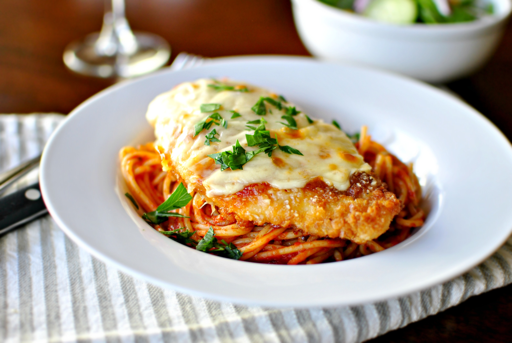

Homepage
Chicken Parm

Description
Chicken Parm is a delicious Italian-American dish that has been enjoyed by all.
Ingredients
- Olive Oil
- Panko Breadcrumbs
- Egg
- Flour
- Tomato Sauce
- Chicken
- Salt
- Basil
- Pepper
Steps
- Prepare thinly-sliced chicken by patting it dry.
- Season flour with salt, basil, pepper, and any other desired spices.
- Cover the chicken in flour, then a beaten egg, then panko breadcrumbs.
- Add to a thin layer of olive oil and fry until golden brown and then flip.
- Let rest for 5 minutes and ensure the chicken is 165F internal temp.
- Taste for salt
- Add sauce, cheese, and broil or bake until it looks delicious. Enjoy!